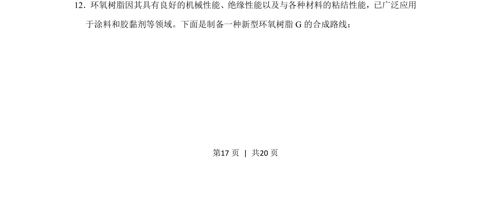
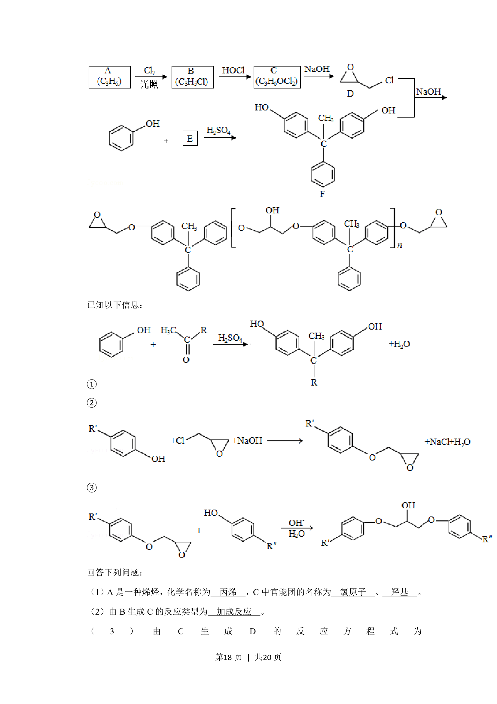
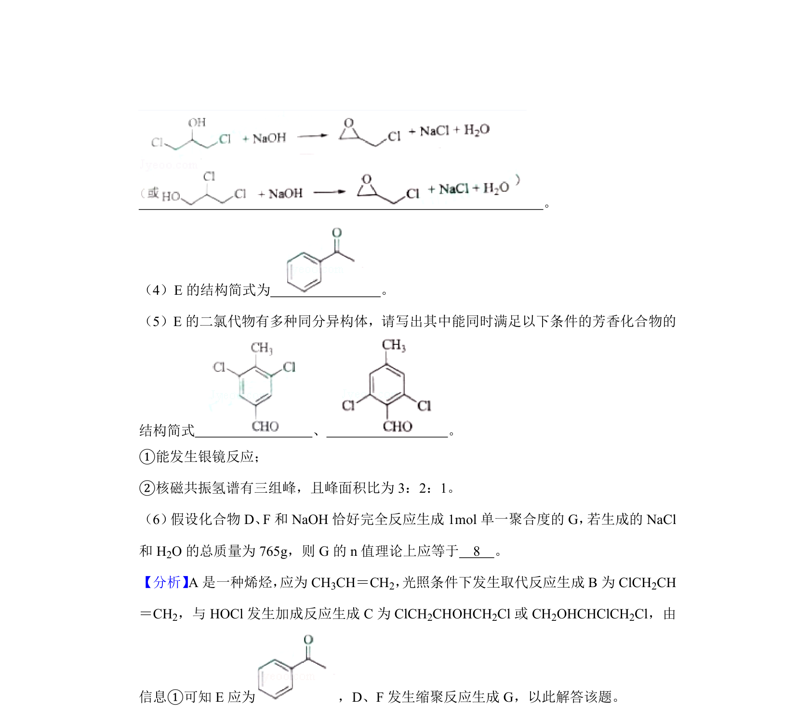
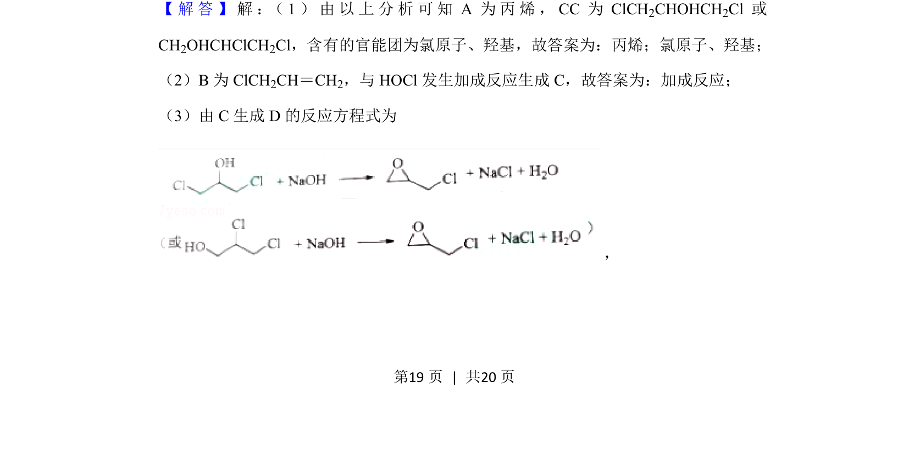
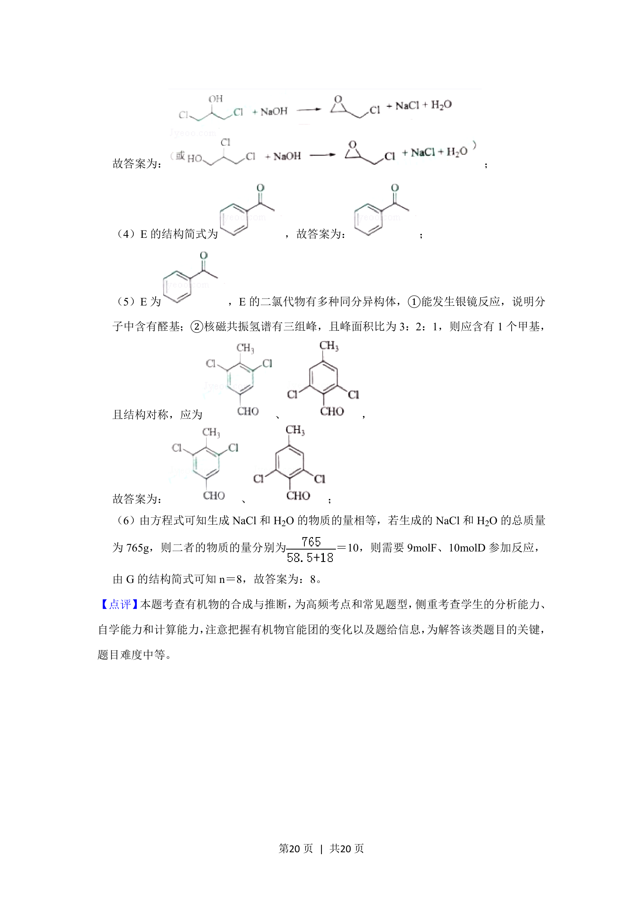

考点：有机合成 官能团转化 结构推断
有机合成
官能团转化
结构推断



分析新型环氧树脂G的有机合成路线，推断中间产物结构。


📄 原 PDF 第 17 页：素材/真题/吉林/2008-2024·（吉林）化学高考真题/2019年高考化学试卷（新课标Ⅱ）（解析卷）.pdf
素材/真题/吉林/2008-2024·（吉林）化学高考真题/2019年高考化学试卷（新课标Ⅱ）（解析卷）.pdf